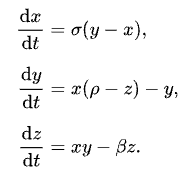

Edward Norton Lorenz
Lorenz’s Attractor
In 1961, Edward Lorenz was using a computer to simulate weather patterns with 12 variables. To save time, he restarted the simulation from a midpoint using rounded data from an earlier run. The original simulation used six decimal places, but the printout rounded numbers to three decimals.
When he used the rounded data, the weather predictions were completely different. This showed that even tiny changes in the starting conditions could lead to vastly different results, a phenomenon now known as the "butterfly effect" in chaos theory.
The term "butterfly effect" in popular media may stem from the real-world implications of the Lorenz attractor, namely that several different initial chaotic conditions evolve in phase space in a way that never repeats, so all chaos is unpredictable. This underscores that chaotic systems can be completely deterministic and yet still be inherently unpredictable over long periods of time. Because chaos continually increases in systems, it is impossible to predict the future of systems well. For instance, even the small flap of a butterfly's wings could set the world on a vastly different trajectory, such as by causing a hurricane. The shape of the Lorenz attractor itself, when plotted in phase space, may also be seen to resemble a butterfly.
Lorenz’s discovery, which introduced the concept of Lorenz attractors, showed that precise long-term weather predictions are generally impossible, even with detailed atmospheric models. His work demonstrated that small changes in initial conditions can lead to drastically different outcomes, highlighting the inherent uncertainty in long-term forecasting.
The equations relate the properties of a two-dimensional fluid layer uniformly warmed from below and cooled from above. In particular, the equations describe the rate of change of three quantities with respect to time: x is proportional to the rate of convection, y to the horizontal temperature variation, and z to the vertical temperature variation.[3] The constants σ, ρ, and β are system parameters proportional to the Prandtl number, Rayleigh number, and certain physical dimensions of the layer itself.[3]
Lorenz used the following values for these parameters:
In the Lorenz system, it is commonly assumed that the parameters σ, ρ, and β are positive.
β = 8 / 3
ρ = 28
For these values (and nearby values), the system exhibits chaotic behavior.